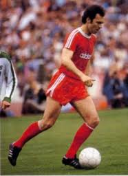
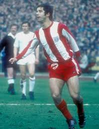

Istorie
Bayern München este fără dar şi poate unul dintre cele mai renumite cluburi din Germania şi din lume, un colos al fotbalului german. Clubul a fost fondat în anul 1900 de către clubul de gimnastică din München. Prima performanţă au avut-o chiar în primul lor sezon în Campionatul Germaniei de Sud, echivalentul unei divizii locale de fotbal, unde au ajuns până în semifinale. Apoi 10 ani mai târziu, Bayern s-a alăturat în noua ligă de atunci “Kreisliga”, prima ligă regională din Bavaria. Au câştigat această competiţie chiar în primul an. Apoi a urmat primul război mondial, ce a reprezentat o perioadă de declin pentru toate echipele din Germania. Prima performanţă majoră obţinută de bavarezi a fost titlul de câştigătoare a primei ligi germane contra celor de la Eintracht Frankfurt în finală, scor 2-0. Preşedintele şi antrenorul de atunci ai lui Bayern erau evrei şi, odată cu venirea lui Hitler la putere, au fost nevoiţi să părăsească Germania. Acest fapt a cauzat o criză pentru clubul din Bavaria. După cel de-al Doilea Război Mondial, care s-a terminat catastrofal pentru nemţi, Bayern s-a alăturat unei noi competiţii formate in 1945 şi anume “Oberliga Sud”, competiţie ce avea să devină în 1963 “Bundesliga” de astăzi. În anul 1955 câştigă prima lor Cupă a Germaniei. În 1963 se formează “Bundesliga” în care Bayern ratează promovarea în dauna rivalei München 1860, care câştigase ultima ediţie de “Oberliga Sud”. Totuşi, reuşesc să promoveze 2 ani mai târziu cu o echipă formată pe atunci din tinerii Franz Beckenbauer, Sepp Maier şi Gerd Müller, jucători care aveau să devină emblematici pentru fotbalul nemţesc.

Primul lor sezon în „Bundesliga” a fost un succes, terminând pe locul 3 şi câştigând Cupa Germaniei. A rezultat o calificare în Cupa Campionilor Europeni, unde au ajuns în finală, însă bavarezii au pierdut contra scoţienilor de la Glasgow Rangers. În 1967 câştigă din nou Cupa Germaniei. În sezonul viitor, Bayern a reuşit să câştige atât campionatul, cât şi cupa cu doar 13 jucatori. În anul 1970, Udo Lattek preia postul de antrenor al lui Bayern. În anul 1972, bavarezii câştigă un nou titlu contra celor de la Schalke 04, scor 5-1 în primul meci televizat în direct din Germania. Urmatoarele 2 campionate au fost câştigate tot de ei. În anul 1974 reuşesc să câştige Cupa Campionilor Europeni contra celor de la Atletico Madrid, scor 4-0. Ei îşi păstrează trofeul în 1975, învingând în finală Leeds United. Situaţia a fost asemănătoare şi anul ce avea sa vină, învingând Saint-Etienne în finala de la Glasgow. Apoi a urmat prima lor Cupă Intercontinentală, câştigată în faţa celor de la Cruzeiro.

A urmat apoi o perioadă de uşor declin pentru Bayern. Beckenbauer a plecat la New York Cosmos în 1977, Gerd Müller a plecat şi el în SUA la Fort Lauderdale Strickers iar Sepp Maier se retrăsese. Abia după aproape 2 decenii, Bayern a reuşit să câştige din nou un trofeu european, mai precis în 1996, când au câştigat Cupa UEFA contra celor de la Bordeaux. În 1997 aveau să câştige un nou titlu în Germania. În 1998 ratează la milimetru titlul în dauna noi-promovate de atunci Kaiserslautern, iar în 1999 pierde finala Ligii Campionilor în faţa lui Manchester United cu 2 goluri marcate în minutele 92 şi 93. De atunci, Bayern a câştigat multe titluri de campioană a Germaniei, Cupe ale Germaniei, inclusiv Liga Campionilor din 2001 sub conducerea lui Ottmar Hitzfeld.